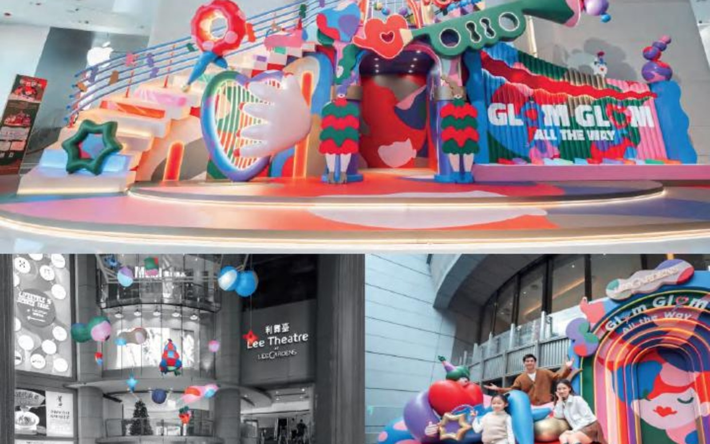

2023 / 香港利园 / Jirayu Koo
Glom Glom All the Way 冬日享「乐」派对
A playful Lee Gardens winter celebration built with Thai artist Jirayu Koo's Glom-Glom character.
泰国艺术家 Jirayu Koo 以 Glom-Glom 角色为利园区注入冬日正能量。
Back to Projects
A playful Lee Gardens winter celebration built with Thai artist Jirayu Koo's Glom-Glom character.
泰国艺术家 Jirayu Koo 以 Glom-Glom 角色为利园区注入冬日正能量。
Back to Projects